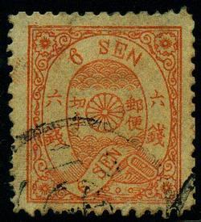
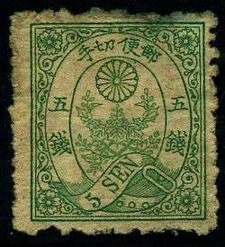
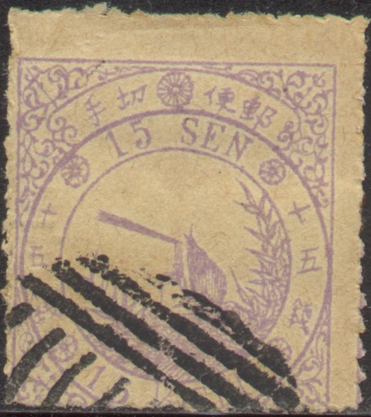
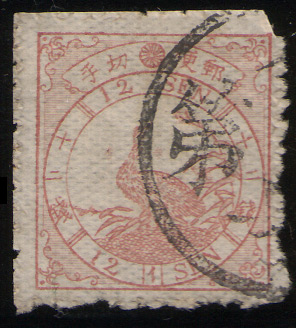

{kind=link}

{kind=link}

Note: on my website many of the
pictures can not be seen! They are of course present in the
catalogue;
contact me if you want to purchase it.
Examples of some forgeries:


A Spiro forgery of the 5 sen value, reduced size. I've also seen
it with a "JOKOHAMA" cancel in a single circle without
any date. Also a 6 sen Spiro forgery with a "JOKAHAMA"
cancel
Some forgeries are also inscribed with the words 'Mo-Zo' (meaning 'imitation' in Japanese), see the website http://isjp.org/expert/Cherry_Blossoms/CB.html for much more information. Example:
(A Mozo forgery; 'Mo-zo' is written in two small characters below
the lowest characters at the right and left hand side of the
ellipse)
Some reprints were made in 1961 in a minisheet of the 5 sen green, 6 sen orange and 6 sen violet. These reprints are imperforate and have two Japanese characters printed at the back.

1961 reprints


(Spiro forgery)
Block of three Spiro forgeries of the 45 s value.

(Forgeries with a bogus 'JOKOHAMA' cancel)



A Wada forgery, note the (very faint in the left stamp!) Japanese
inscriptions at both sides of the neck of the bird signifying
forgery.
(A forgery with the inscription 'SAN KO'; see the red arrows)


(forgery with 'SAN KO' almost hidden by the cancel, still visible
at the left hand side of the eagle, right to it a zoom-in of a
stamp with clearly visible 'SAN KO' marks)
Another 'SAN KO' forgery of the 45 s value
(Forgery, reduced size)
I've seen some reprints of the 'bird issue', which were made in 1961 (all three values printed imperforate on a mini-sheet). The inscription is '1871-1961' with additional Japanese inscription.
{kind=link}
{kind=link}